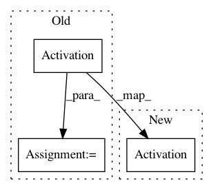

9a4598da50457317a7ffdc681d2a2998380fa5a1,keras/applications/mobilenet.py,,_conv_block,#Any#Any#Any#Any#Any#,504
Before Change
strides=strides,
name="conv1")(input)
x = BatchNormalization(axis=channel_axis, name="conv1_bn")(x)
x = Activation(relu6, name="conv1_relu")(x)
return x
After Change
strides=strides,
name="conv1")(input)
x = BatchNormalization(axis=channel_axis, name="conv1_bn")(x)
return Activation(relu6, name="conv1_relu")(x)
def _depthwise_conv_block(input, pointwise_conv_filters, alpha,
depth_multiplier=1, strides=(1, 1), block_id=1):
In pattern: SUPERPATTERN
Frequency: 3
Non-data size: 3
Instances
Project Name: keras-team/keras
Commit Name: 9a4598da50457317a7ffdc681d2a2998380fa5a1
Time: 2017-06-27
Author: francois.chollet@gmail.com
File Name: keras/applications/mobilenet.py
Class Name:
Method Name: _conv_block
Project Name: dmlc/gluon-nlp
Commit Name: ca071a6dfd7ad729a50127d1e43afe417b3230b6
Time: 2018-07-09
Author: leonard@lausen.nl
File Name: gluonnlp/model/convolutional_encoder.py
Class Name: ConvolutionalEncoder
Method Name: __init__
Project Name: keras-team/keras
Commit Name: 4fab0bf9a8ad03d63af0797b51526a0391e55a87
Time: 2017-06-27
Author: francois.chollet@gmail.com
File Name: keras/applications/mobilenet.py
Class Name:
Method Name: _depthwise_conv_block